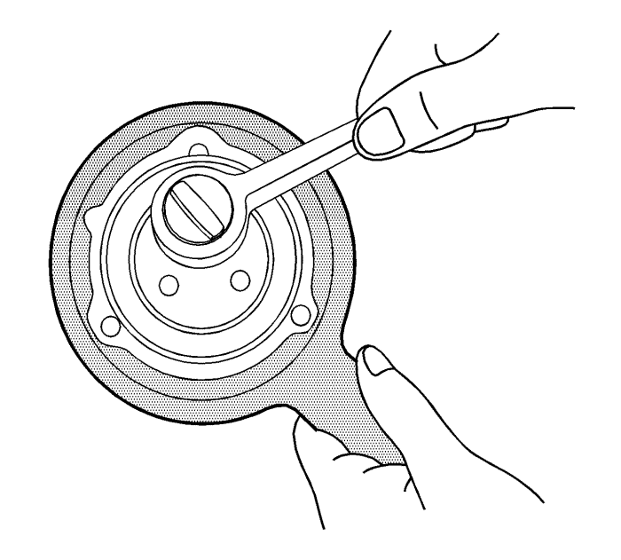
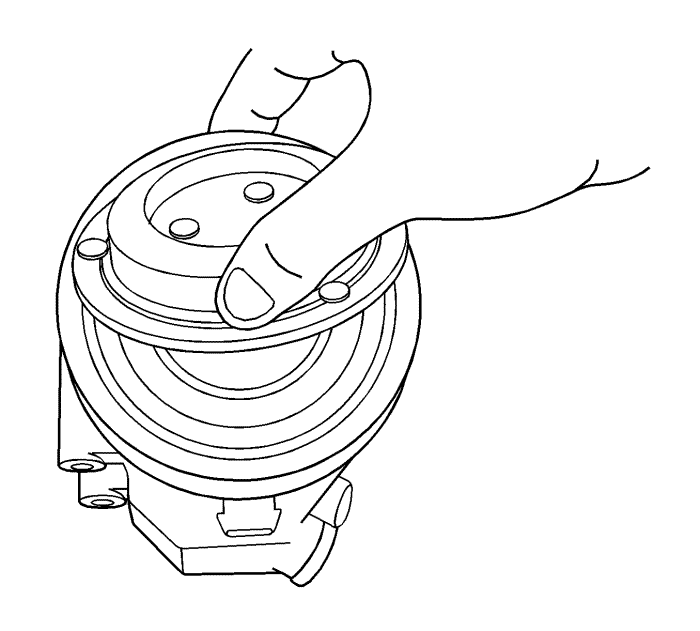
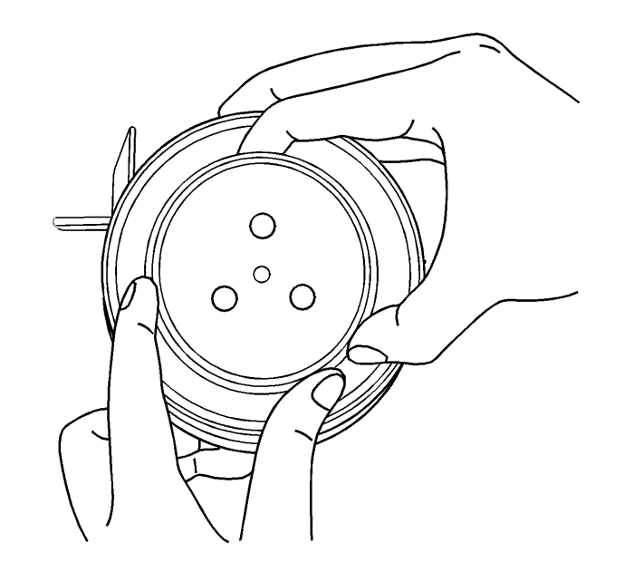
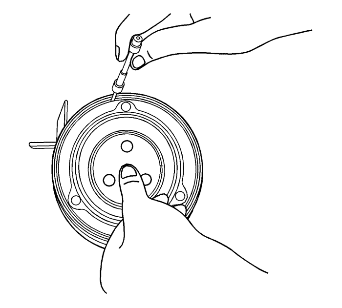
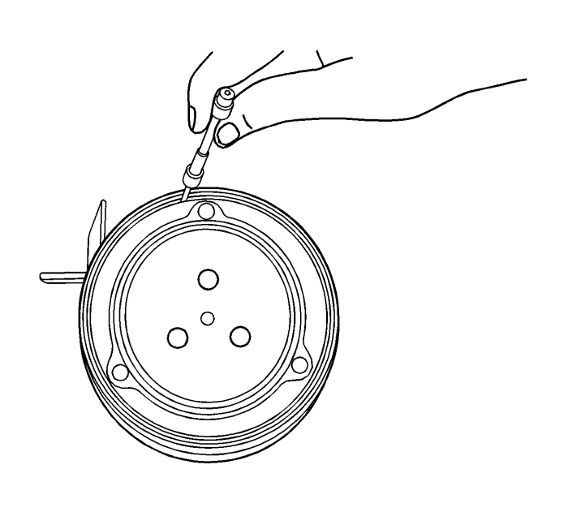

Sustitución del conjunto del embrague del aire acondicionado
Herramientas especiales
GE-806 Útil de sujeción del cubo del embrague
Para obtener más información sobre herramientas regionales equivalentes, consultar Herramientas especiales
Procedimiento de desmontaje

- Desconecte el cable de batería negativo. Consultar Desconexión y conexión del cable de batería negativo
- Recuperar el refrigerante. Consultar Recuperación y recarga del agente frigorífico
- Retire el compresor. Consultar Sustitución de compresor de aire acondicionado : Diesel → V6 → 2,4l .
- Emplear la herramienta GE-806 para evitar que gire el conjunto de de accionamiento del embrague.
- Desmontar el perno del conjunto de de accionamiento del embrague.

- Tirar del conjunto de accionamiento del embrague del compresor para desmontarlo.
Procedimiento de montaje

- Montar el conjunto de accionamiento del embrague en el compresor.

Nota: Si el entrehierro no es correcto, cambie el suplemento para que cumpla el entrehierro.
- Comprobar el entrehierro con el calibre para alambres pulsando el conjunto de accionamiento del embrague antes de apretar el perno del accionamiento del embrague. Entrehierro: 0,3-0,6 mm
Precaución: Consulte Precaución con las fijaciones en la sección Prólogo.
- Montar el perno del accionamiento del embrague en el conjunto de accionamiento del embrague y apretar a 13,5 N·m (10 lib. pie).

- Volver a comprobar el entrehierro con la galga de espesores. Entrehierro: 0,3-0,6 mm
- Monte el compresor. Consultar Sustitución de compresor de aire acondicionado : Diesel → V6 → 2,4l .
| © Copyright Chevrolet Europe. All rights reserved |